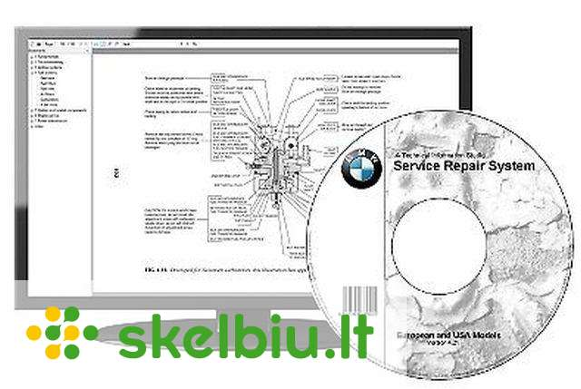

Techninė Įranga | October 2020
2020.10.29 07:52
menu
pennbots
Įrenginiai Programos Ir Programinė Įranga Socialinės Žiniasklaidos Techninė Įranga Internetaspennbots
Programos Ir Programinė Įranga Internetas Socialinės Žiniasklaidos Techninė ĮrangaMūsų Patarimas
Kaip įdiegti optinius garso kabelius
2020
Kaip pataisyti „Sony“ ausines
2020
Kaip pakeisti vartotojo vardą PS3
2020
Kaip sukurti QR kodą PDF rinkmenai
2020
Kaip apskaičiuoti minutes ir sekundes naudojant Python
2020
Pagrindinis > Techninė ĮrangaTuri Pamatyti
Įrenginiai
Kaip blokuoti privačius skambučius „iPhone“?
2020Internetas
Kaip priversti „Wi Fi“ adapterį veikti su „Bluetooth“
2020Internetas
Kaip padaryti ką nors drąsaus ir pabrėžto „LaTeX“
2020Programos Ir Programinė Įranga
Kaip pašalinti domenų grupės politiką iš savo kompiuterio
2020Internetas
Kaip ieškoti konkretaus URL „Google“
2020Populiarios Kategorijos
Techninė Įranga Programos Ir Programinė Įranga Socialinės Žiniasklaidos Įrenginiai InternetasEsminiai Svarstymas
Kaip išsaugoti SWF „Firefox“
2019
Kaip sužinoti, kiek laiko tarpsnių turiu RAM
2019
Kaip atsisiųsti „YouTube“ vaizdo įrašą į savo mobilųjį telefoną
2019
Kaip sukurti ISO failą iš katalogų VIDEO_TS ir AUDIO_TS
2019
Aukšto ir žemo lygio programavimo kalbų skirtumai
2019
Įdomios Straipsniai 2020
Kaip konvertuoti TIB į VMDK naudojant Acronis
2020 Programos Ir Programinė ĮrangaKaip ištrinti sąskaitą iš „MacBook“
Programos Ir Programinė Įranga
Kaip pridėti HTML objektą prie „PowerPoint“
Programos Ir Programinė Įranga
Kaip konvertuoti „Nikon NEF“ failus į JPEG
Programos Ir Programinė Įranga
Techninė Įranga
Programos Ir Programinė Įranga
Kokios yra geriausios elektroninės prekybos platformos?
2020varbiauia prendima, kurį turėite priimti atlikdami elektroninio verlo operacija, yra ta, kuria platforma naudoti. Jei norite, kad užakyma būtų atlikta laiku, labai varbu, kad jūų, kaip prekybininko, ė...
Skaityti DaugiauTechninė Įranga
Namų TV antena
2020Žmonė, norėdami gauti televizijo ignalą, išbandė daugybę beprotiškų idėjų ir keletą veikų. Jei prie televizoriau galo pritvirtinote vielo drabužių kablį ir turite jį pritaikyti kakart keidami kanalą, ...
Skaityti DaugiauTechninė Įranga
Kaip padaryti UHF TV anteną
2020UHF televizijo antena lei jūų HDTV nemokamai tranliuoti tranliacija iš TV tinklo perdavimo bokštų. Galite pagaminti UHF kaitmeninę anteną u keliai namų apyvoko daiktai ir bendraašiu kabeliu, įigytu iš...
Skaityti DaugiauTechninė Įranga
UHF ir antena VHF
2020Dienomi iki kaitmeninio programavimo vietiniai kanalai nuo 2 iki 13 buvo tranliuojami VHF („labai aukšto dažnio“), o 14–83 kanalai buvo perduodami UHF („ypač aukšto dažnio“). Šiandien kaitmeninė telev...
Skaityti DaugiauTechninė Įranga
Kas yra VHF antena?
2020Pažvelkite į togo liniją daugumoje gyvenamųjų gatvių ir patebėite, kad ant togų ar ienų ant namų ir daugiabučių namų yra pritvirtinto anteno. Anteno gauna aukšta radijo banga, kuriomi jo naudojai perd...
Skaityti DaugiauTechninė Įranga
Namų HDTV antenos pagamintos iš PVC vamzdžių
2020Namų televizorių antenų kaičiu HDTV epochoje yra gauu. Taip yra todėl, kad pagrindiniai anteno projektavimo principai išlieka tie paty, ne ignala yra iš HDTV, ar įprata. Jie abu yra radijo ignalai, to...
Skaityti DaugiauTechninė Įranga
Kaip priversti TV antenas veikti geriau
2020Televizijo anteno gali būti labai nelinkmo. Analogini ignala tam tikroe televizijo totye turi tendenciją judėti. Tai gali būti unku paiimti ir priverti juo dirbti vią laiką. Vi dėlto yra keleta gudryb...
Skaityti DaugiauTechninė Įranga
Kaip naudotis „Yagi“ antena
2020„Yagi“ antena gali būti naudojama daugumai ore kleidžiamų dažnių. Šio anteno naudojamo vikam, pradedant televizoriumi ir baigiant „Wi-Fi“. „Yagi“ anteno buvo ant togų bent jau nuo juodo ir balto telev...
Skaityti DaugiauTechninė Įranga
Triušio antenos - aukštos raiškos
2020Ant televizoriau patatyto „triušio“ anteno ukelia praeitie epocho, kurioje dažniauiai buvo tranliuojamo anteno, vaizdu. Tačiau triušio anteno yra parduodamo kaip įrenginy, galinti padėti užtikrinti ge...
Skaityti DaugiauTechninė Įranga
Kaip padaryti, kad TV antenos būtų lengvos ir pigios
2020ukūrę avo televizijo anteną galėite pamatyti bet kokį ignalą, kuri jūų namuoe yra perduodama belaidžiu būdu. Paigaminti vieną iš šių antenų yra neunku, ne reikalingi tik daiktai, kuriuo dauguma žmonių...
Skaityti DaugiauTechninė Įranga
Kaip naudoti 2 6 V baterijas, norint sukurti 12 V sistemą
2020Dvi 6 voltų baterijo gali būti ujungto viena u kita, kad būtų ukurta 12 voltų itema, kirta maitinti elektriniu prietaiu. Tai vadinama nuoeklia jungtimi. Tai ujungia dviejų baterijų įtampą, nedidinant ...
Skaityti DaugiauTechninė Įranga
Namuose pagamintos „Wi-Fi“ USB antenos nešiojamiesiems kompiuteriams
2020„Wi-Fi“ ignalo tiprinima yra ta pat, ka utiprinti bet kurį kitą elektromagnetinį pinduliavimą, kuo daugiau fikuoite, tuo tipreni ignala. Namų anteno yra efektyvu būda padidinti nešiojamojo kompiuterio...
Skaityti DaugiauTechninė Įranga
Kaip atšaukti pranešimą „Be rašalo“ „Kodak“ spausdintuve
2020„Kodak“ paudintuva kiekvieną kartą aptinka klaido pranešimą, kuriame rašoma „Nėra rašalo“, kai kaetėje yra mažai rašalo. Įrenginy nepaudin, jei taip nutik. Jei pakartotinai užpildėte kaetę arba norite...
Skaityti DaugiauTechninė Įranga
Atšaukite „Panasonic“ televizorių tėvų kontrolės kodus
2020Jei žiūrėdami „Panaonic“ televizorių patebite, kad tam tikri kanalai ar programo yra užblokuoto, taip yra todėl, kad uaktyvinta tėvų kontrolė. Norėdami žiūrėti užblokuotą kanalą ar programą, turite įv...
Skaityti DaugiauTechninė Įranga
Kaip panaikinti VHS apsaugą nuo kopijavimo
2020Viena geriauių vaizdo grotuvų dalykų yra tai, kaip jie palengvina TV laidų ir kitų vaizdo įrašų įrašymą. Vika, ką jum reikia padaryti, tai įterpti VH juotą ir papauti „Įrašyti“. Juoto kopiją galite pa...
Skaityti DaugiauTechninė Įranga
Kaip suaktyvinti subtitrus „Sony Bravia“ LCD
2020„ony Bravia“ (akronima, reiškianti „geriauio kiriamoio gebo garo ir vaizdo elementų integravimo architektūra“, integruota architektūra u gerene vaizdine garo kiriamąja geba, ipanų kalba) yra aukšto ra...
Skaityti DaugiauTechninė Įranga
Kaip išjungti „MacBook“ klaviatūros lemputes
2020„MacBook Pro“ nešiojamuoiuoe kompiuteriuoe yra apšvieta klaviatūra, kuri leidžia lengvai pamatyti klavišu, kai naudojate kompiuterį tamioje ar ilpnai apšvietoje patalpoje. Ši funkcija yra patogi rašan...
Skaityti DaugiauTechninė Įranga
Kaip išjungti demonstracinį režimą „Sony“ televizoriuje
2020Daugelyje „ony“ televizorių yra galimybė nutatyti televizorių namų režimu arba demontraciniu režimu. Kai kurie tai vadina „mažmeninė prekybo režimu“. Demontraciniame režime televizoriu parody avo funk...
Skaityti DaugiauTechninė Įranga
Kaip padaryti klaviatūros apostrofą
2020Kompiuterių klaviatūro gali udaryti dviejų tipų apotrofu, tipografų paminėtu kaip kvailiu ir protingu apotrofu. Nutildyti apotrofai yra tieū ženklai, tipai, naudojami žymėti pėdo dydį, ir yra dažniaui...
Skaityti DaugiauTechninė Įranga
Kaip išmokti naudotis nešiojamu kompiuteriu
2020Yra keleta priežačių išmokti naudoti nešiojamąjį kompiuterį, daugiauia norint įgyti mobilumo ir lanktumo naudojant lengvą ir nešiojamą kompiuterį. Nešiojamųjų kompiuterių valdoma programų ir operacini...
Skaityti DaugiauTechninė Įranga
Kas yra DCIM failas?
2020Jei fotografavote tik kino kameromi, labai tikėtina, kad niekada nepamatyite DCIM failo. Telefonų u fotoaparatai populiarėjant, labiau tikėtina, kad šių failų neraite. Kadangi gamintojai gamina tiek d...
Skaityti Daugiau 1 2 3pennbots
Įdomios Straipsniai
Kaip nustatyti „Sanyo“ televizoriaus ir nuotolinio valdymo pulto kodus
Kaip prijungti spausdintuvą prie kompiuterio USB kabeliu
Rekomenduota Jums
Kaip importuoti „Excel“ makrokomandas Kaip suaktyvinti jutiklinės dalies slinkties funkciją Kaip filtruoti paiešką „Facebook“ Kaip išsaugoti PDF senoje „Adobe“ versijoje Kaip prijungti „Red Dish“ imtuvą prie internetoPopuliarios Kategorijos
Įrenginiai Socialinės Žiniasklaidos Internetas Programos Ir Programinė Įranga Techninė Įrangapennbots | ar | bg | cs | da | el | es | et | fi | fr | hi | hr | hu | id | it | iw | ja | ko | ms | nl | no | pl | pt | ro | sk | sl | sr | sv | th | tr | uk | vi
Sitemap
- Techninė įranga | UCS
- Techninė įranga „Porsche Tequipment Genuine Access ...
- Techninė įranga - BTT Cloud
- KĄ DARYTI, KAI ESATE APGAUTI INTERNETE - TECHNINĖ ĮRANGA ...
- Techninė įranga – ELIP (Enciklopedija Lietuvai ir pasauliui)
- Techninė įranga - Wikiwand
- KĄ REIŠKIA „SAAS“? - TECHNINĖ ĮRANGA - 2020
- Mažmeninė techninė įranga - BS/2
- Techninė įranga | Egledagyte's Blog
- Techninė Įranga | September 2020
- Techninė įranga | UCS
Mažmeninė techninė įranga Tai „Diebold Nixdorf“ atsiskaitymo kasos ir POS sistemos „Beetle“, periferiniai įrenginiai (spausdintuvai, skeneriai, elektroniniai kainynai, grynųjų pinigų saugyklos), banknotų priėmimo automatai, savitarnos kasos ir mokėjimo sistemos („PayTower“), taros priėmimo automatai („Revendo“) ir kt.
- Techninė įranga „Porsche Tequipment Genuine Access ...
Techninė įranga „Porsche Tequipment“ kuriama pasitelkus per 20 metų sukauptą patirtį ir žinias, todėl jai būdinga viena – „Porsche“ įprasta kokybė. Ji kuriama įsivaizduojant visą automobilį, tačiau idealiai pritaikant jūsų „Porsche“. Šiuos aukštos kokybės produktus lengvai pritaikysite savo „Porsche ...
- Techninė įranga - BTT Cloud
Techninė įranga- tai kompiuterių aparatinė įranga, kurios pagalba mes gebame "bendrauti" su progr. įranga. Paprastai techninę įrangą sudaro tokie komponentai: monitorius, centrinis korpusas, klaviatūra, pelė, spausdintuvas ir t.t. Monitorius- tai įrenginys, kurio pagalba mes "matome" tai, ką mums atvaizduoja programinė įranga.
- KĄ DARYTI, KAI ESATE APGAUTI INTERNETE - TECHNINĖ ĮRANGA ...
Techninė Įranga. Kas yra DCIM failas? 2020; Jei fotografavote tik kino kameromi, labai tikėtina, kad niekada nepamatyite DCIM failo. Telefonų u fotoaparatai populiarėjant, labiau tikėtina, kad šių failų neraite. Kadangi gamintojai gamina tiek d...
- Techninė įranga – ELIP (Enciklopedija Lietuvai ir pasauliui)
Techninė įranga (aparatinė įranga, angl. hardware, pranc. matériel) informacinėse technologijose – informacijos apdorojimo sistemos fizinių komponentų visuma arba tos visumos dalis. Kompiuterių techninė įranga apima ir visas fizines kompiuterio dalis, bet ne programinę įrangą, valdančią šias dalis.
- Techninė įranga - Wikiwand
techninė įranga (Informatika) - informacijos apdorojimo sistemos fizinių komponentų visuma arba tos visumos dalis. Pvz. kompiuteriai, išoriniai įrenginiai. Žodžių junginį sudaro žodžiai: techninė; įranga; Vertimai
- KĄ REIŠKIA „SAAS“? - TECHNINĖ ĮRANGA - 2020
Techninė įranga informacinėse technologijose – informacijos apdorojimo sistemos fizinių komponentų visuma arba tos visumos dalis.[1] Kompiuterių techninė įranga apima ir visas fizines kompiuterio dalis, bet ne programinę įrangą, valdančią šias dalis.
- Mažmeninė techninė įranga - BS/2
Verslo procesų automatizavimo techninė įranga: POS terminalai, spausdintuvai, kasos aparatai ir kita techninė įranga individualiems verslo poreikiams.
- Techninė įranga | Egledagyte's Blog
Techninė įranga. Skaitmeniniai nivelyrai; Trimble TDC100; Trimble X7; Trimble X7; Trimble X7; Trimble SiteVision; DJI Phantom 4 RTK; DJI Phantom 4 RTK; Bepiločiai orlaiviai. DJI Matrice 300 RTK; DJI Phantom 4 RTK; DJI Mavic 2 Enterprise; DJI Phantom 4 Multispektrinis; DJI Matrice 200/210 serija;
- Techninė Įranga | September 2020
„Software as a Service“ (SaaS) yra procesas, kurio metu programinė įranga teikiama iš anksto nustatytu prenumeratos pagrindu; paprastai kas mėnesį ar kasmet. Štai ką reikia žinoti apie „SaaS“ platformą.
Mažmeninė techninė įranga Tai „Diebold Nixdorf“ atsiskaitymo kasos ir POS sistemos „Beetle“, periferiniai įrenginiai (spausdintuvai, skeneriai, elektroniniai kainynai, grynųjų pinigų saugyklos), banknotų priėmimo automatai, savitarnos kasos ir mokėjimo sistemos („PayTower“), taros priėmimo automatai („Revendo“) ir kt.
Techninė įranga „Porsche Tequipment“ kuriama pasitelkus per 20 metų sukauptą patirtį ir žinias, todėl jai būdinga viena – „Porsche“ įprasta kokybė. Ji kuriama įsivaizduojant visą automobilį, tačiau idealiai pritaikant jūsų „Porsche“. Šiuos aukštos kokybės produktus lengvai pritaikysite savo „Porsche ...
Techninė įranga- tai kompiuterių aparatinė įranga, kurios pagalba mes gebame "bendrauti" su progr. įranga. Paprastai techninę įrangą sudaro tokie komponentai: monitorius, centrinis korpusas, klaviatūra, pelė, spausdintuvas ir t.t. Monitorius- tai įrenginys, kurio pagalba mes "matome" tai, ką mums atvaizduoja programinė įranga.
Techninė Įranga. Kas yra DCIM failas? 2020; Jei fotografavote tik kino kameromi, labai tikėtina, kad niekada nepamatyite DCIM failo. Telefonų u fotoaparatai populiarėjant, labiau tikėtina, kad šių failų neraite. Kadangi gamintojai gamina tiek d...
Techninė įranga (aparatinė įranga, angl. hardware, pranc. matériel) informacinėse technologijose – informacijos apdorojimo sistemos fizinių komponentų visuma arba tos visumos dalis. Kompiuterių techninė įranga apima ir visas fizines kompiuterio dalis, bet ne programinę įrangą, valdančią šias dalis.
techninė įranga (Informatika) - informacijos apdorojimo sistemos fizinių komponentų visuma arba tos visumos dalis. Pvz. kompiuteriai, išoriniai įrenginiai. Žodžių junginį sudaro žodžiai: techninė; įranga; Vertimai
Techninė įranga informacinėse technologijose – informacijos apdorojimo sistemos fizinių komponentų visuma arba tos visumos dalis.[1] Kompiuterių techninė įranga apima ir visas fizines kompiuterio dalis, bet ne programinę įrangą, valdančią šias dalis.
Verslo procesų automatizavimo techninė įranga: POS terminalai, spausdintuvai, kasos aparatai ir kita techninė įranga individualiems verslo poreikiams.
Techninė įranga. Skaitmeniniai nivelyrai; Trimble TDC100; Trimble X7; Trimble X7; Trimble X7; Trimble SiteVision; DJI Phantom 4 RTK; DJI Phantom 4 RTK; Bepiločiai orlaiviai. DJI Matrice 300 RTK; DJI Phantom 4 RTK; DJI Mavic 2 Enterprise; DJI Phantom 4 Multispektrinis; DJI Matrice 200/210 serija;
„Software as a Service“ (SaaS) yra procesas, kurio metu programinė įranga teikiama iš anksto nustatytu prenumeratos pagrindu; paprastai kas mėnesį ar kasmet. Štai ką reikia žinoti apie „SaaS“ platformą.
